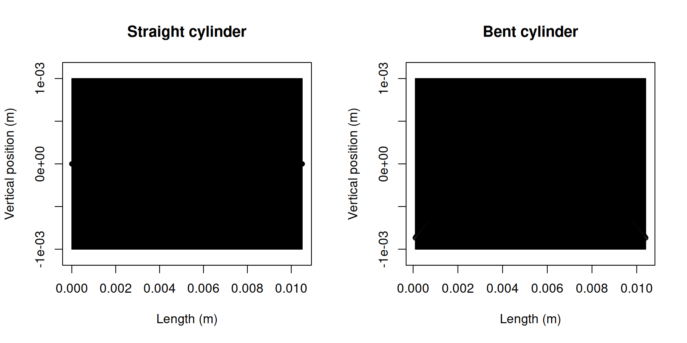
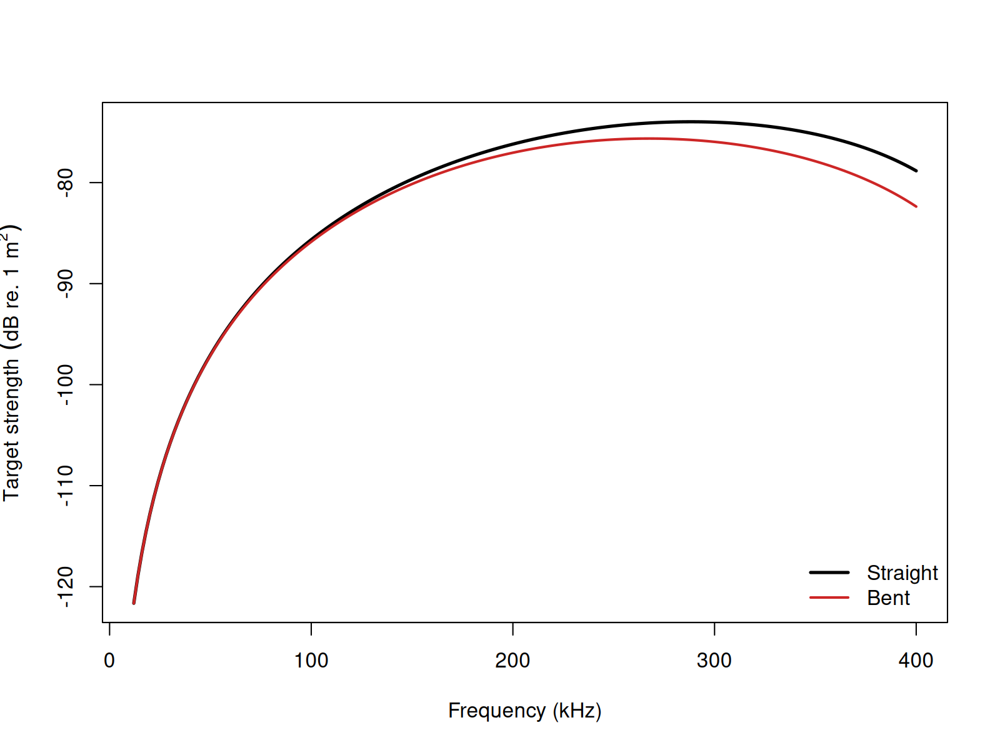
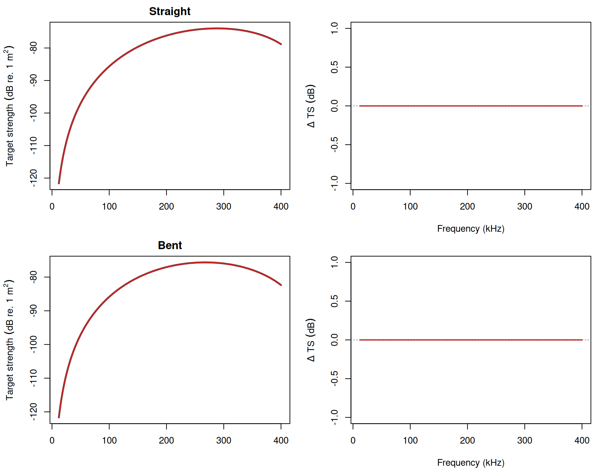

Bent cylinder modal series solution
Source:vignettes/bcms/bcms-implementation.Rmd
bcms-implementation.RmdacousticTS implementation
Experimental Unvalidated
Model-family pages: Overview Implementation Theory
The bent-cylinder modal-series solution is available through
target_strength(..., model = "bcms"). It is intended for
slender, weakly scattering cylinders whose cross-section is still well
represented by the finite-cylinder modal-series family, but whose
centerline curvature reduces backscattering coherence relative to the
straight-cylinder case.
That is the practical reason to use BCMS instead of
FCMS. FCMS is the appropriate model when the
target can be treated as a straight finite cylinder. BCMS
is the natural extension when the same cylinder idealization is still
acceptable locally, but the body curvature is strong enough that the
straight-cylinder coherence assumption is no longer appropriate.
BCMS is still marked unvalidated because there is not
yet an external public software benchmark ladder wired into the package.
The implementation checks documented here are the two defining
identities of the model: the straight branch must reduce to
FCMS, and the bent branch must match the Stanton (1989)
coherence-corrected construction built from that same straight-cylinder
solution.
Building straight and bent reference objects
The reference case used throughout this page is a weakly scattering liquid-filled cylinder with:
- length
10.5 mm - radius
1 mm - density contrast
g = 1.0357 - sound-speed contrast
h = 1.0279 - broadside incidence
-
12-400 kHzin2 kHzsteps
Two geometries are compared:
- a straight finite cylinder
- a bent cylinder with
rho_c / L = 1.5
In acousticTS, the objects are built as:
library(acousticTS)
density_sw <- 1026.8
sound_speed_sw <- 1477.3
straight_shape <- cylinder(
length_body = 10.5e-3,
radius_body = 1e-3,
n_segments = 401
)
straight_object <- fls_generate(
shape = straight_shape,
density_body = density_sw * 1.0357,
sound_speed_body = sound_speed_sw * 1.0279,
theta_body = pi / 2
)
bent_object <- brake(
straight_object,
radius_curvature = 1.5
)
straight_object## FLS-object
## Fluid-like scatterer
## ID:UID
## Body dimensions:
## Length:0.011 m(n = 401 cylinders)
## Mean radius:0.001 m
## Max radius:0.001 m
## Shape parameters:
## Defined shape:Cylinder
## L/a ratio:10.5
## Taper order:N/A
## Material properties:
## Density: 1063.4568 kg m^-3 | Sound speed: 1518.5167 m s^-1
## Body orientation (relative to transducer face/axis):1.571 radians
bent_object## FLS-object
## Fluid-like scatterer
## ID:UID
## Body dimensions:
## Length:0.011 m(n = 401 cylinders)
## Mean radius:0.001 m
## Max radius:0.001 m
## Shape parameters:
## Defined shape:Cylinder
## L/a ratio:10.5
## Taper order:N/A
## Material properties:
## Density: 1063.4568 kg m^-3 | Sound speed: 1518.5167 m s^-1
## Body orientation (relative to transducer face/axis):1.571 radiansThe straight object carries the same geometric information that would
be passed into FCMS. The bent object keeps the same local
cylindrical radius and material contrasts, but adds the curvature ratio
needed by the bent-cylinder coherence correction. That separation is
important because it makes clear what BCMS is changing: the
local cross-sectional scattering physics remain cylindrical, while the
along-body coherence is modified by curvature.
Calculating TS-frequency spectra
The same BCMS call can be applied to either
geometry:
frequency <- seq(12e3, 400e3, by = 2e3)
straight_object <- target_strength(
object = straight_object,
frequency = frequency,
model = "bcms",
density_sw = density_sw,
sound_speed_sw = sound_speed_sw
)
bent_object <- target_strength(
object = bent_object,
frequency = frequency,
model = "bcms",
density_sw = density_sw,
sound_speed_sw = sound_speed_sw
)For a straight cylinder, the BCMS result should collapse
onto the straight finite-cylinder modal-series result. For a bent
cylinder, the result should show the same basic modal structure, but
with the coherence reductions expected from curvature.
Extracting model results
Model results can be inspected visually or pulled directly from the stored object.
Plotting results


The geometry panel is useful because BCMS is only
meaningful when the object is still locally cylinder-like. The spectrum
panel then shows the corresponding acoustic effect of that curvature:
the bent-cylinder response remains related to the straight-cylinder
result, but the backscattered level is reduced by the coherence loss
built into the model.
Accessing results
## frequency ka f_bs sigma_bs TS
## 1 12000 0.05103786 -8.271249e-07-2.430844e-08i 6.847265e-13 -121.6448
## 2 14000 0.05954416 -1.124880e-06-3.854702e-08i 1.266842e-12 -118.9728
## 3 16000 0.06805047 -1.467840e-06-5.745291e-08i 2.157856e-12 -116.6598
## 4 18000 0.07655678 -1.855750e-06-8.167089e-08i 3.450480e-12 -114.6212
## 5 20000 0.08506309 -2.288325e-06-1.118381e-07i 5.248937e-12 -112.7993
## 6 22000 0.09356940 -2.765245e-06-1.485835e-07i 7.668659e-12 -111.1528The stored data.frame contains the modeled frequency,
the complex backscattering amplitude f_bs, the linear
backscattering cross-section sigma_bs, and TS.
For BCMS, it is often helpful to inspect these results
alongside the corresponding straight-cylinder case, because the defining
behavior of the model is the way curvature changes coherence relative to
the straight-cylinder baseline.
Implementation checks
Straight-cylinder reduction
| Reference relation | Max abs. delta TS (dB) | Mean abs. delta TS (dB) | f at max delta (kHz) | acousticTS elapsed (s) | Reference elapsed (s) |
|---|---|---|---|---|---|
| BCMS straight branch vs FCMS | 0 | 0 | 12 | 0.04 | 0.03 |
This is the first defining identity of the model. When curvature is
absent, BCMS should not behave like a different cylinder
model. It should reduce exactly to the straight finite-cylinder
modal-series solution. The zero residual therefore matters because it
shows that the curvature correction truly drops out when it should.
Bent-cylinder coherence relation
| Reference relation | Max abs. delta TS (dB) | Mean abs. delta TS (dB) | f at max delta (kHz) | acousticTS elapsed (s) | Reference elapsed (s) |
|---|---|---|---|---|---|
| BCMS bent branch vs Stanton (1989) coherence construction | 0 | 0 | 12 | 0.13 | 0.02 |
This is the second defining identity. The bent-cylinder branch is
expected to match the straight-cylinder modal-series result multiplied
by the Fresnel-style coherence factor implied by Stanton (1989, Eq.
25-26). The check is therefore not asking whether BCMS
matches itself. It is asking whether the implemented bent-cylinder
branch reproduces the explicit coherence-corrected construction that
defines the model.
Spectrum overlay

The overlay makes the two implementation identities easier to
interpret. The straight branch sits exactly on the FCMS
baseline, while the bent branch sits exactly on the coherence-corrected
reference. The practical takeaway is that the package is honoring the
intended model decomposition: straight-cylinder modal scattering plus a
curvature-driven coherence correction.
Closing note
BCMS is best viewed as a controlled extension of
FCMS, not as a completely separate scattering family. The
page is therefore organized around the two checks that matter most for
that relationship: reduction to FCMS in the straight limit,
and exact agreement with the bent-cylinder coherence construction in the
curved case. Those checks do not replace an external benchmark ladder,
but they do establish that the current implementation is respecting the
defining algebra of the model.